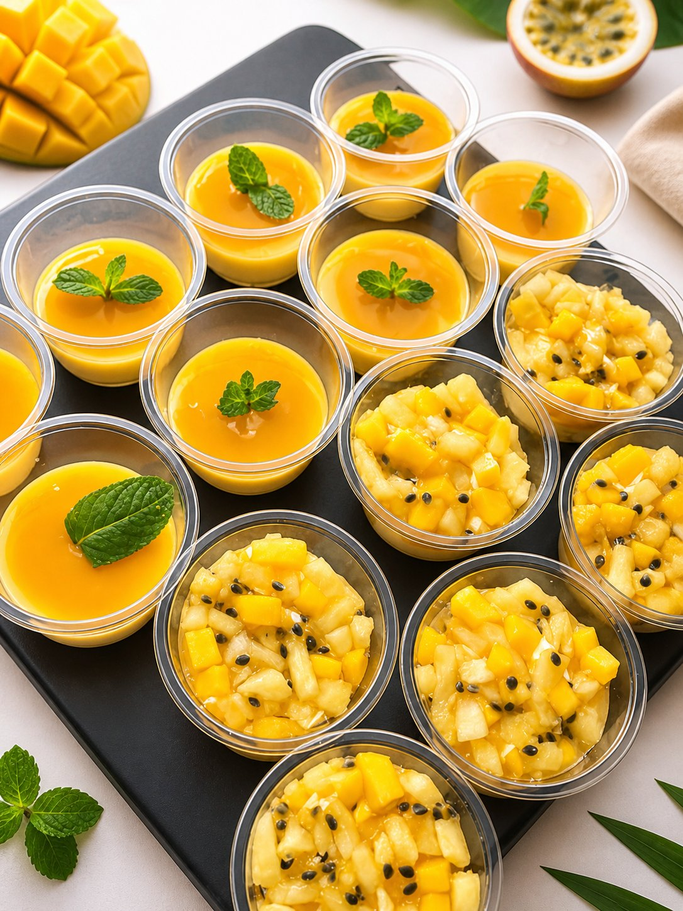
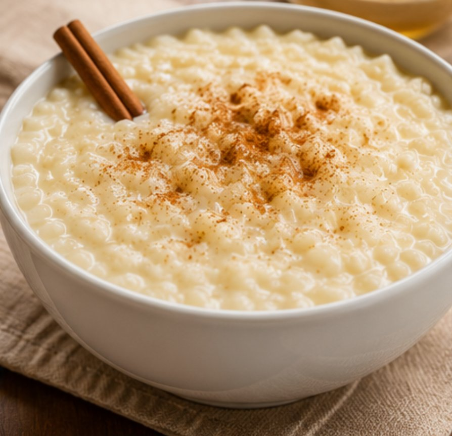
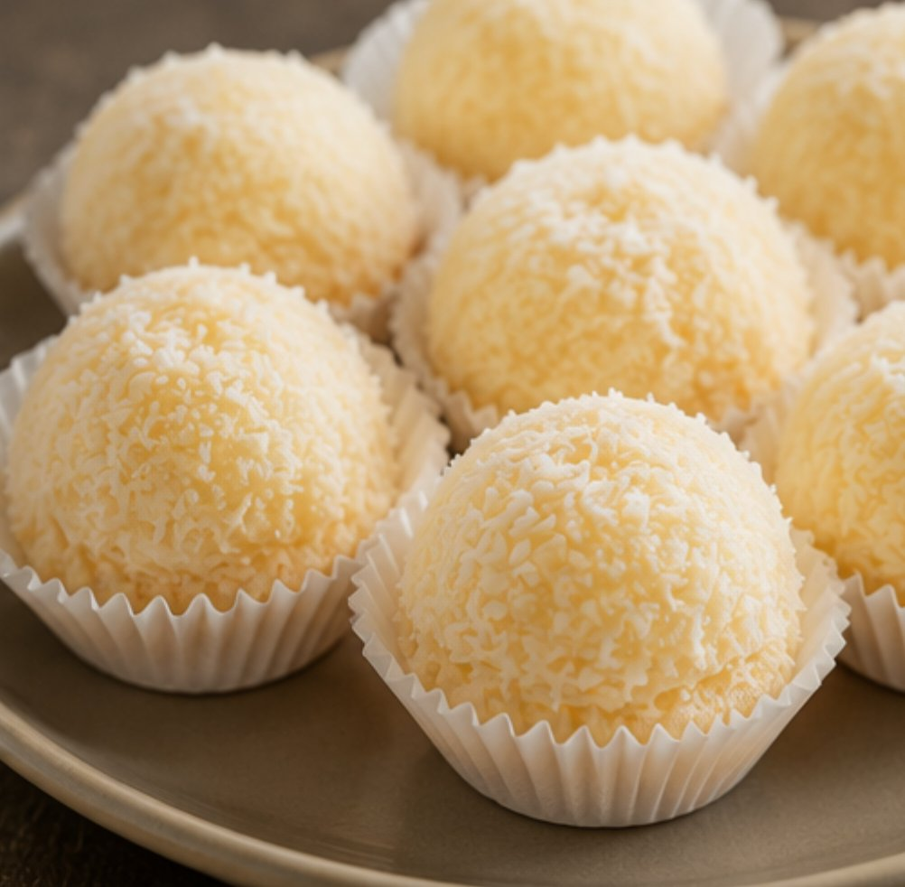
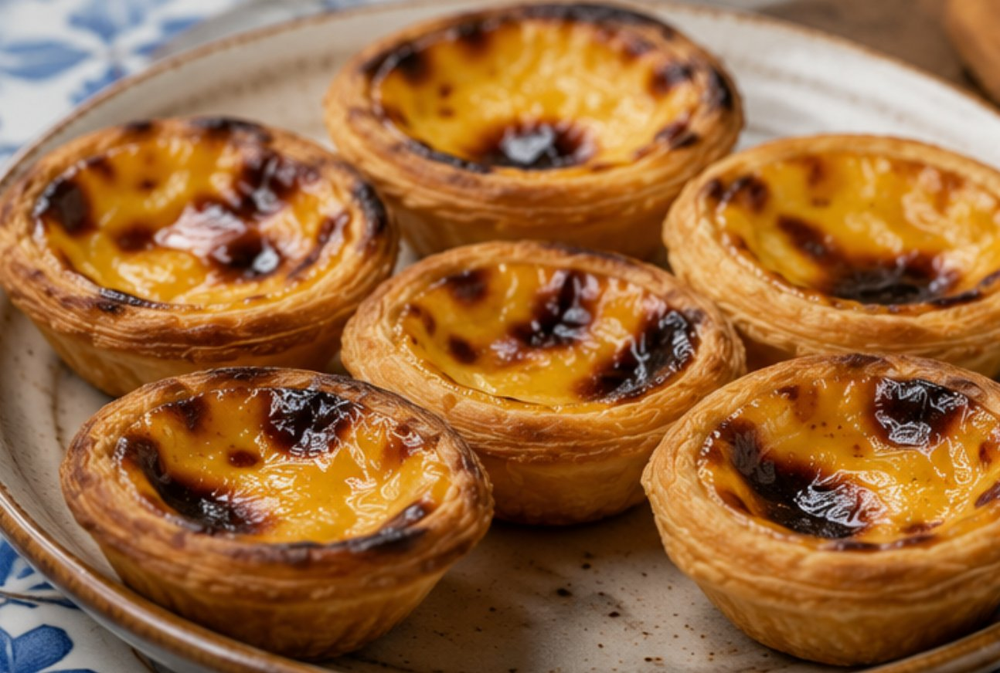
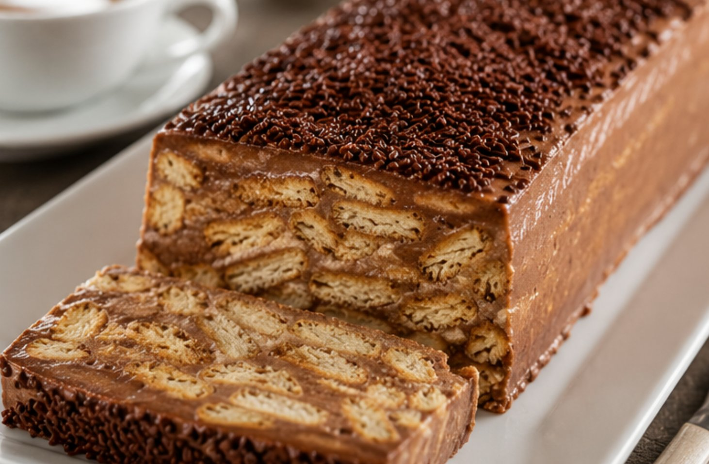
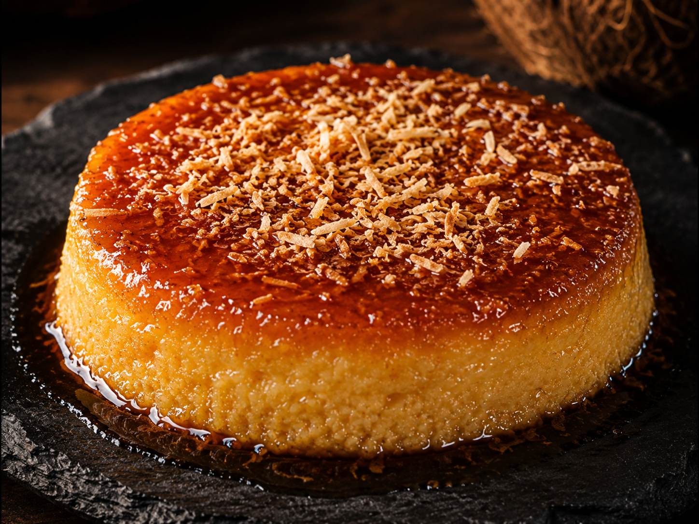
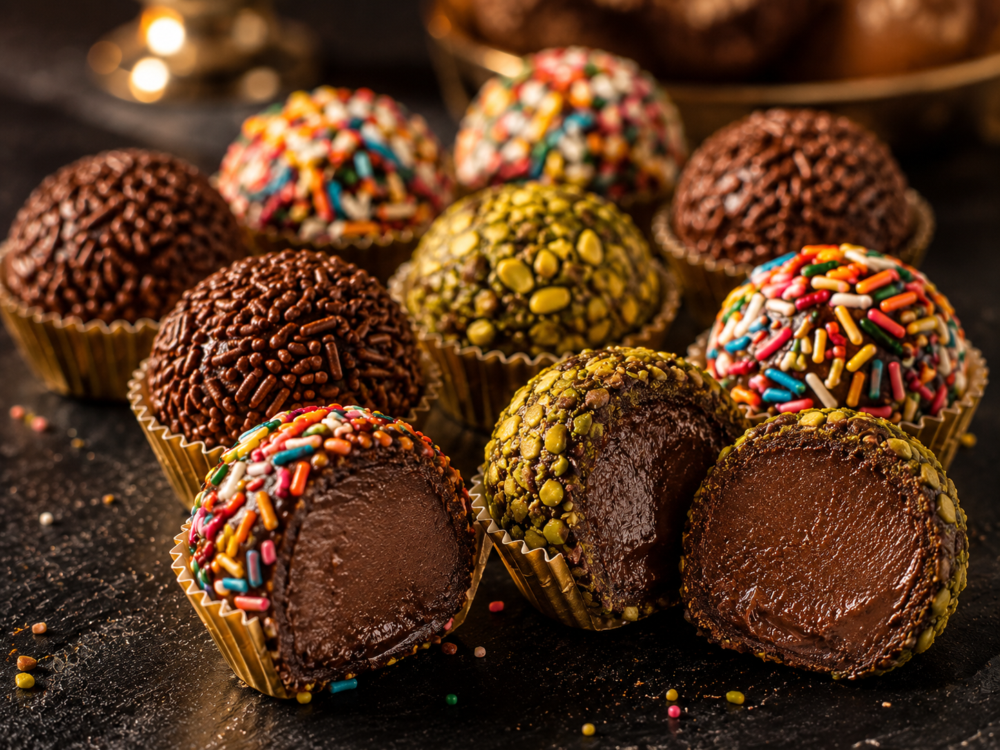
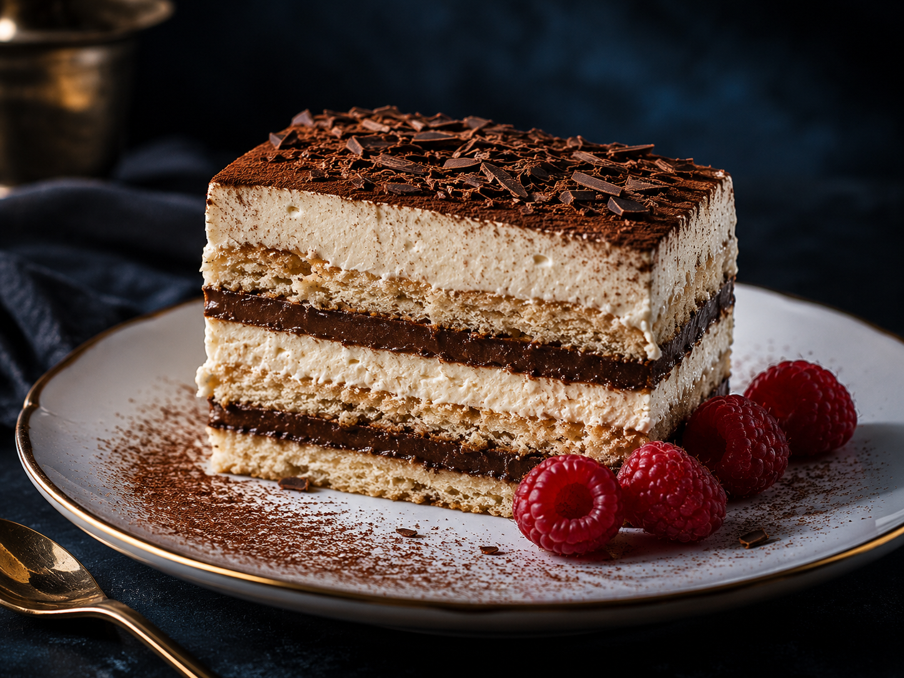

Galerie photos
Des douceurs qui font voyager
Chaque dessert est préparé à la commande avec des ingrédients frais et des recettes familiales. Retrouvez nos spécialités capverdiennes et portugaises les plus appréciées.










